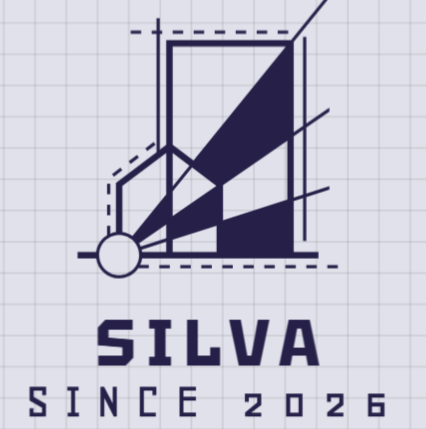

Welcome Home
Discover Our Website
Welcome to my Midterm laboratory project. This site is built using separate HTMl pages to display distinct views clearly. By utilizig semanic HTML tags and custom CSS layout properties, information is presented in a balanced and accessible structure.
